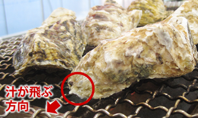
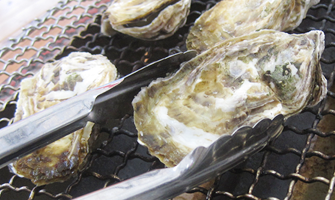
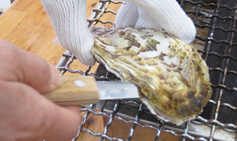
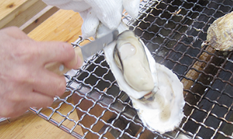
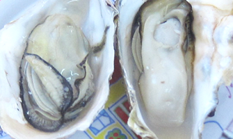

牡蠣の美味しい焼き方
牡蠣の美味しい焼き方
アツアツ・プリプリの牡蠣を楽しむための手順をご案内します
焼き方の手順

1
平らな面を下にして焼きます
ガス火の準備ができたら、牡蠣の平らな面を下にして並べます。約40秒後、殻が開く前にトングでひっくり返します。
殻の丸い方から汁が飛びますので、殻の丸い方を人のいない方向に置くのがポイントです。

2
ひっくり返してもう片面を焼きます
ひっくり返した後、2〜3分焼いて殻が開き、牡蠣の身が白くなっていれば食べごろです。殻が1〜2ミリしか開かない牡蠣もありますが、同じタイミングで焼き始めた牡蠣が開いていれば食べられます。そのまま焼き続けると、焦げてしまいますので、網の端の方に置くか、お皿に取ってください。

3
殻を開けます
牡蠣の平らな方を上にして、殻の尖った方を手で持って固定します。殻の丸い方から殻の内側にナイフの刃先を入れて殻を開き、上の殻（平らな方）をはずします。この時、下の殻（丸みがある方）に、牡蠣の旨味をたっぷり含んだ汁が出ていますので、こぼさないように気をつけます。
軍手を使用してやけどにご注意ください。

4
貝柱を切り離します
はずした上の殻（平らな方）に身が付いていますので、殻に沿ってナイフを入れ、貝柱を切り離します。身がはずれたら、下の殻（丸みがある方）に、残した汁にのせるようにそっと身を移します。

5
アツアツの牡蠣をお召し上がりください
焼き立てのアツアツ・プリプリの牡蠣をお楽しみください。
ご注意ください
牡蠣はよく焼いてお召し上がりください。
牡蠣の汁・殻が飛び散ることがありますので、ご注意ください。
コンロの周りは熱くなっていますので、ご注意ください。
軍手に焼けた牡蠣の汁が付くとやけどの恐れがあります。
ご不明な点がございましたら、
スタッフまでお気軽にお声かけください。